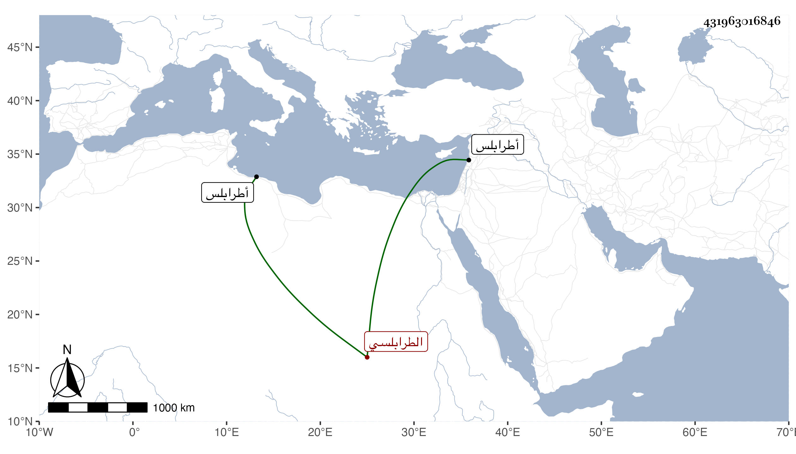

0902Sakhawi.DawLamic.ITO20230111-ara1.EIS1600.431963016846
Biography ID: 431963016846
94
عبد الله بن عبد القادر بن عبد القادر الطرابلسي ويعرف بابن الحبال . ولد تقريبا سنة خمس وسبعين وسبعمائة بطرابلس وسمع الصحيح على محمد بن علي اليونيني والشريف محمد بن محمد بن إبراهيم الحسيني ومحمد بن محمد بن أحمد الجردي كلهم عن الحجار ... سماعا وحدث سمع منه الفضلاء ومات قريبا من سنة خمسين .
